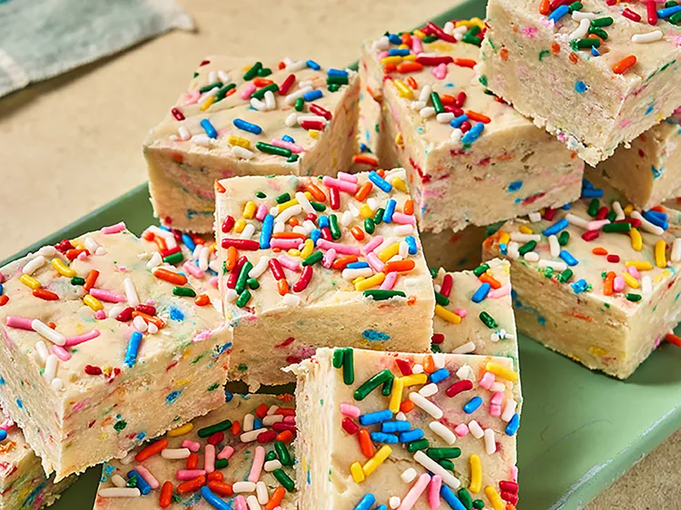

Cake Mix Fudge
You won't believe how easy this cake mix fudge is to make, and easy to change to suit your taste. Customize it choosing any flavor cake mix, and then adding your favorite sprinkles, nuts, or small candies.

Ingredients
- 1 (14 ounce) can sweetened condensed milk
- 1 (12 ounce) bag white chocolate chips
- 1 1/2 cups cake mix, any flavor
- 1/2 cup desired mix-ins, such as sprinkles, nuts, or candies, plus more for top
Directions
- Combine condensed milk and white chocolate chips in a small saucepan and set over medium-low heat. Cook, stirring constantly, until chocolate chips are melted. Remove from heat and sprinkle cake mix and sprinkles (or desired mix-ins) in at the same time.
- Transfer mixture to an 8 x 8 baking pan lined with parchment paper. Press mixture into an even layer and top with more sprinkles for garnish if desired.
- Let cool completely or refrigerate until ready to serve.
- Cut into 20 to 25 squares and store in an airtight container.
Home